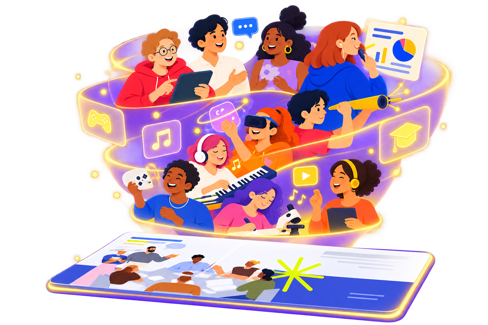
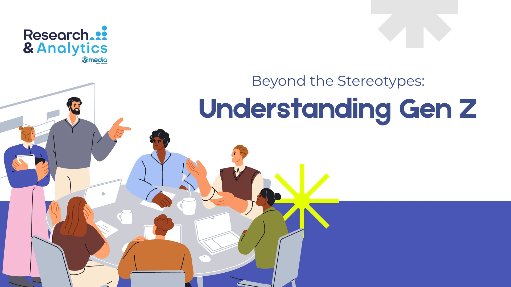

Mengapa Gen Z tampil berbeda di media sosial?
Cara mereka menampilkan diri secara digital tidak selalu sama dengan keseharian dan lingkaran terdekatnya.
KOMPAS.com+ MAX
Empat riset untuk melihat Gen Z Indonesia melampaui stereotip dari identitas dan budaya hingga musik dan cara mereka memandang uang.

Di balik berbagai label tentang Gen Z, ada cara mereka membangun identitas, menikmati budaya, memilih musik, hingga mengambil keputusan finansial yang lebih kompleks dari yang terlihat.
Cara mereka menampilkan diri secara digital tidak selalu sama dengan keseharian dan lingkaran terdekatnya.
Bagi mereka, uang bukan hanya soal menabung, tetapi juga kebebasan menentukan prioritas dan gaya hidup.
Nostalgia menjadi cara untuk mencari pengalaman yang terasa lebih personal dan autentik.
Cara Gen Z menemukan, memilih, dan menikmati musik tidak lagi selalu berawal dari genre atau nama musisi.

Identitas, multi-persona, inner circle, dan bagaimana Gen Z melihat dirinya sendiri.
Nostalgia, thrifting, photobox, kamera analog, serta tren yang kembali menemukan tempat di generasi digital.
TikTok, discovery, genre-agnostic, dan alasan feel sebuah lagu semakin menentukan.
Financial independence, lifestyle, FOMO, saving, hingga bagaimana Gen Z mengalokasikan uang untuk passion.
Report ini menyatukan berbagai riset Gen Z Kompas.com sepanjang 2024–2026 untuk memberikan gambaran yang lebih utuh tentang generasi muda Indonesia.
Menggabungkan insight dari beberapa riset, bukan hanya satu studi.
Berfokus pada Gen Z dalam konteks kehidupan urban dan akses terhadap teknologi.
Mencakup identitas, budaya populer, musik, hingga perilaku finansial.
Empat riset yang dilakukan bertahap sejak 2024 hingga 2026, merekam bagaimana perilaku dan pandangan Gen Z terus bergeser dari waktu ke waktu.
Perilaku & identitas
Financial & spending behaviour
Music & discovery
Culture, lifestyle & current behaviour
Temuan dalam report dapat menjadi titik awal untuk pekerjaan yang berhubungan dengan audiens muda.
Memahami identitas, prioritas, dan respons Gen Z terhadap tren.
Membaca pola discovery musik, konten, dan budaya populer.
Mendapat sintesis beberapa studi dalam satu report.
Pertanyaan seputar isi laporan, format, pembayaran, dan akses bonus.
Anda akan mendapatkan digital report Understanding Gen Z yang dapat diunduh, serta akses Kompas.com PLUS MAX sesuai periode yang termasuk dalam paket.
Report akan dikirim ke email yang Anda gunakan saat transaksi. Pastikan alamat email yang dimasukkan aktif dan benar. Setelah diterima, report dapat langsung diunduh melalui tautan yang tersedia di email.
Ya. Pembelian report sudah termasuk akses Kompas.com PLUS MAX untuk menikmati Kompas.com tanpa iklan, artikel utuh, konten eksklusif, podcast, newsletter, dan game tanpa batas di semua device.
Tergantung metode pembayaran yang digunakan. Detail perpanjangan akan diinformasikan saat proses transaksi.
Periksa kembali inbox serta folder Spam atau Promotions pada email yang digunakan saat transaksi. Jika report belum diterima, hubungi Customer Service Kompas.com dengan menyertakan informasi transaksi melalui:Email: cs@kompas.comWhatsApp: +62 812 2011 3212
Lihat lebih dalam bagaimana Gen Z membangun identitas, mengikuti budaya, menikmati musik, dan mengambil keputusan finansial.